Tu fuente de información sobre tecnología verde
Nombres de los integrantes: Jonathan Bautista Hernandez 182910
Primero empesemos diciendo que "green tech" o tecnología verde se refiere a un conjunto de tecnologías y prácticas que se centran en la conservación y el uso sostenible de los recursos naturales, así como en la reducción del impacto ambiental.
| Informacion | Imagen | |||||||
|---|---|---|---|---|---|---|---|---|
| Origen |
El concepto de tecnología verde surge como respuesta a la creciente preocupación por los problemas ambientales, como el cambio climático, la contaminación del aire y del agua, la pérdida de biodiversidad, entre otros. |
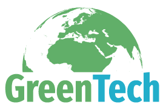 | ||||||
| Bases |
La tecnología verde se basa en principios de sostenibilidad, eficiencia y respeto por el medio ambiente. Esto implica el desarrollo y la implementación de tecnologías que reduzcan el consumo de recursos naturales, minimicen la generación de residuos y emisiones, y fomenten la utilización de fuentes de energía renovable y limpias. Además, la tecnología verde a menudo se apoya en conceptos como la economía circular, que busca maximizar el uso de recursos mediante la reutilización, el reciclaje y la remanufactura de productos y materiales. |
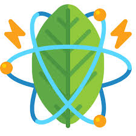 | ||||||
| Objetivo |
El principal objetivo de la tecnología verde es mitigar los impactos ambientales negativos asociados con el desarrollo humano y promover un desarrollo más sostenible y equitativo. Esto implica reducir las emisiones de gases de efecto invernadero, conservar los recursos naturales, proteger la biodiversidad, promover la eficiencia energética y crear empleos verdes. A largo plazo, la tecnología verde busca transformar los sistemas económicos y sociales hacia modelos más sostenibles, donde la producción y el consumo estén en armonía con los límites del planeta. Además, la tecnología verde busca fomentar la innovación y la colaboración global para abordar los desafíos ambientales de manera efectiva y asegurar un futuro sostenible para las generaciones venideras. |
|||||||
La historia de la tecnología verde se entrelaza con la evolución del pensamiento ambiental y los avances tecnológicos a lo largo del tiempo. Si bien las preocupaciones sobre el impacto humano en el medio ambiente han existido durante siglos, la atención específica hacia el desarrollo de tecnologías orientadas a la sostenibilidad y la mitigación del cambio climático ha cobrado fuerza en las últimas décadas.
Durante gran parte del siglo XX, el enfoque principal estaba en el crecimiento económico y tecnológico sin considerar plenamente los efectos negativos en el medio ambiente. Sin embargo, a partir de la década de 1960, comenzaron a surgir movimientos ambientalistas que llamaban la atención sobre la contaminación del aire y del agua, así como sobre la degradación de los ecosistemas. Este período marcó el inicio de una mayor conciencia pública sobre los problemas ambientales.
En la década de 1970, se produjeron eventos significativos que ayudaron a impulsar la agenda ambiental a nivel global. La publicación del informe "Los límites del crecimiento" del Club de Roma en 1972 alertó sobre los peligros del crecimiento económico sin límites en un planeta finito. Además, la celebración del Día de la Tierra en 1970 movilizó a millones de personas en todo el mundo para exigir acciones concretas para proteger el medio ambiente.
A medida que avanzaba la década de 1980, la comunidad internacional comenzó a adoptar medidas para abordar los problemas ambientales a través de la cooperación internacional. Se celebraron cumbres ambientales clave, como la Cumbre de la Tierra de Río de Janeiro en 1992, que condujo a la adopción de la Convención Marco de las Naciones Unidas sobre el Cambio Climático (CMNUCC) y la Convención sobre la Diversidad Biológica (CDB).
La tecnología verde comenzó a ganar impulso en este contexto de creciente conciencia ambiental y marcos regulatorios más sólidos. A finales del siglo XX y principios del siglo XXI, se produjeron avances significativos en áreas como la energía renovable, la eficiencia energética, la gestión de residuos y la movilidad sostenible. Por ejemplo, el desarrollo de paneles solares más eficientes, turbinas eólicas de mayor tamaño y tecnologías de baterías más avanzadas ha ampliado las opciones para una transición hacia un sistema energético más limpio y sostenible.
En la última década, el impulso hacia la tecnología verde ha continuado creciendo a medida que los impactos del cambio climático se hacen más evidentes y urgentes. Los gobiernos, las empresas y la sociedad civil están intensificando sus esfuerzos para acelerar la transición hacia un futuro más sostenible. La inversión en tecnologías limpias y renovables está en aumento, y se están implementando políticas y regulaciones más ambiciosas para reducir las emisiones de gases de efecto invernadero y proteger los ecosistemas naturales.
| Ámbito | Descripción | Imagen |
|---|---|---|
| Medio Ambiente | La greentech contribuye a la reducción de la huella de carbono y la conservación de los recursos naturales al promover el uso de energías renovables, la eficiencia energética, la gestión sostenible de residuos, y la conservación de la biodiversidad. | 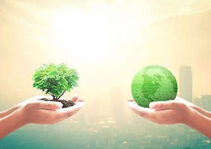 |
| Economía | La adopción de tecnologías verdes genera empleo en sectores como la energía solar, eólica, y la gestión de residuos. Además, puede impulsar la innovación y la competitividad empresarial en mercados emergentes. | |
| Salud Pública | La reducción de la contaminación del aire y del agua mediante tecnologías verdes tiene un impacto directo en la salud de las personas, disminuyendo las enfermedades respiratorias y otros problemas de salud relacionados con la contaminación ambiental. | |
| Social | La greentech puede mejorar la calidad de vida en comunidades vulnerables al proporcionar acceso a servicios básicos como energía limpia, agua potable y saneamiento. Además, puede reducir la brecha digital al promover la inclusión tecnológica en áreas rurales y urbanas marginadas. | 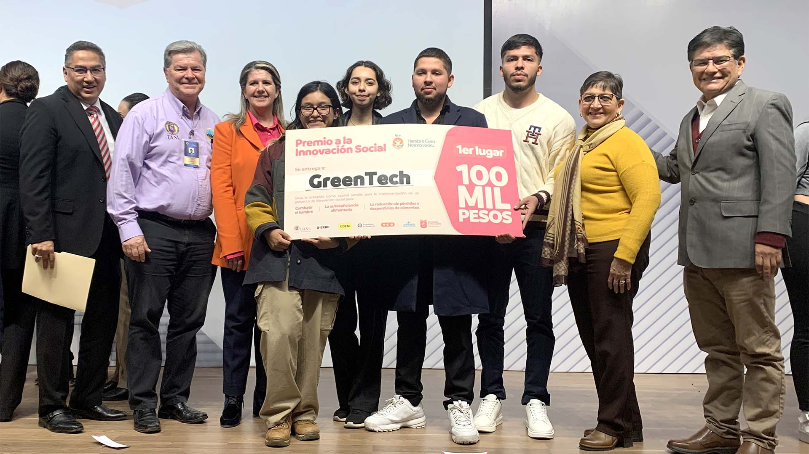 |
| Política | El desarrollo de políticas y regulaciones favorables a la greentech puede influir en la transición hacia una economía más sostenible y en la reducción de las emisiones de gases de efecto invernadero a nivel global. | 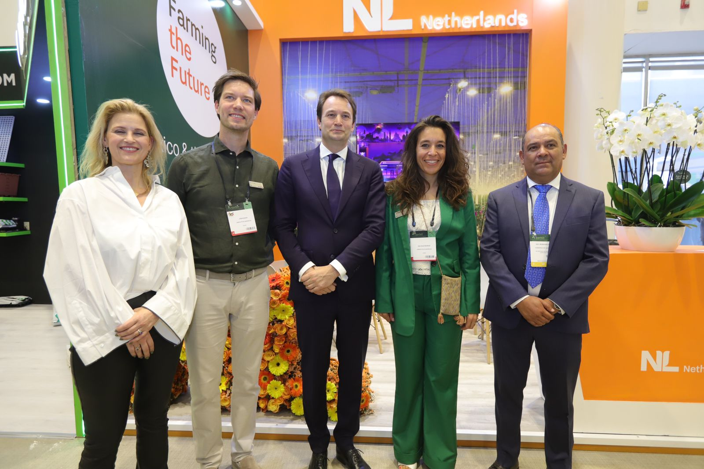 |
En los últimos años, hemos sido testigos de un impresionante avance en la tecnología verde, marcando un hito significativo en la transición hacia un futuro más sostenible y respetuoso con el medio ambiente. Desde innovaciones en energía renovable hasta avances en movilidad sostenible y gestión de recursos, cada sector está experimentando un progreso notable que promete transformar nuestra forma de vivir y trabajar para mejor. Estos avances están impulsando una revolución verde global, donde la innovación y la sostenibilidad se entrelazan para abordar los desafíos más apremiantes de nuestro tiempo.
En el ámbito de la energía renovable, hemos presenciado un crecimiento exponencial en la capacidad instalada de energía solar y eólica, gracias a avances tecnológicos que han mejorado la eficiencia y reducido los costos de producción. Los paneles solares de última generación son más eficientes en la captura de la luz solar, mientras que las turbinas eólicas más grandes y potentes están aprovechando mejor el viento para generar electricidad de manera más confiable y económica que nunca.
Simultáneamente, el almacenamiento de energía ha experimentado una revolución con el desarrollo de baterías de vanguardia. Desde las baterías de flujo hasta las de estado sólido, estas tecnologías prometen almacenar grandes cantidades de energía de manera eficiente, allanando el camino para una red eléctrica más estable y flexible impulsada por fuentes renovables.
En el sector del transporte, la movilidad sostenible está ganando impulso con la proliferación de vehículos eléctricos y de hidrógeno. Las mejoras en la densidad de energía de las baterías están ampliando la autonomía de los vehículos eléctricos, mientras que el desarrollo de infraestructura de carga rápida está eliminando las barreras de entrada para su adopción masiva. Al mismo tiempo, el hidrógeno verde está emergiendo como una alternativa prometedora, ofreciendo una opción de combustible limpia y versátil para una variedad de aplicaciones de transporte.
Estos avances se complementan con innovaciones en eficiencia energética, agricultura sostenible, gestión de residuos y tecnologías de captura de carbono, que juntas están sentando las bases para un futuro más verde y próspero. Desde edificios inteligentes hasta cultivos de precisión y sistemas de reciclaje avanzados, la tecnología verde está transformando todos los aspectos de nuestra vida cotidiana, creando un mundo más sostenible para las generaciones venideras. En resumen, el avance actual en green tech no solo representa un cambio en la tecnología, sino también un cambio en la mentalidad hacia un futuro más sostenible y equitativo para todos.
El area de Green Tech se espera que siga continuando, esperimentando un cresimiento significativo en los proximos años debido al exponencial crecimiento de crear conciencia sobre un cambio climatico y la nesesidad de encontrar soluciones sostenibles para abordar los desafios ambientales
Algunos de los futuroa avances y desarrollos esperados en el campo de Green Tech, A continuacion se muestra una tabla con los mas importantes:
| Nombre | que es? | que se espera o futuros avances | Ejemplos | ||||||||||
|---|---|---|---|---|---|---|---|---|---|---|---|---|---|
| Energia renovables avanzadas |
|
|
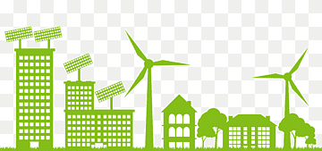 | ||||||||||
| Almacen de energias |
Es un dispositivo capaz de almacenar grandes cantidades de energia electrica en forma de cargas electrostaticas por lo que no hay reacciones quimicas. |
uno de los mayores retos an sido para la integración exitosa de energías renovables en la red eléctrica es el almacenamiento de energía. Se espera que se produzcan avances significativos en tecnologías de almacenamiento de energía, como baterías de ion-litio, almacenamiento térmico y sistemas de almacenamiento de energía a gran escala. |
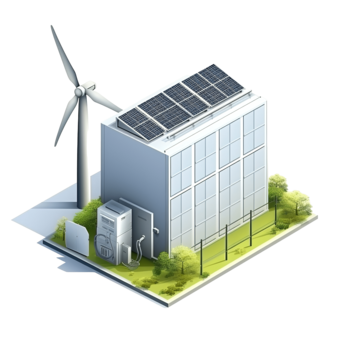 | ||||||||||
| Movilidad sostenible |
En globa un conjunto de prosesos y acciones orientados a conseguir el uso racional de los medios de transporte tanto particulares como publicos. El objetivo ultimo es cubrir las necesidades de transporte con el minimo impacto ambiental. |
Lo que buscara la industria automotriz continuará avanzando en la adopción de vehículos eléctricos y tecnologías de propulsión alternativas, como el hidrógeno y los biocombustibles. Además, se espera un mayor desarrollo de la infraestructura de carga para vehículos eléctricos y soluciones de transporte público más ecológicas. |
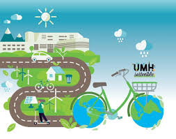 | ||||||||||
| Eficiencia energetica en edificios |
Lo podemos difinir como la eficiencia energetica en edificios como la utilizacion racional de energia para abastecer las nesecidades energeticas de climatizacion de un inmueble(calefaccion y refrigeracion). |
Los avances de la tecnologías que mejoran la eficiencia energética en edificios, como sistemas de climatización inteligentes, iluminación LED y materiales de construcción sostenibles, seguirán siendo áreas de enfoque para reducir el consumo de energía en el sector de la construcción. |
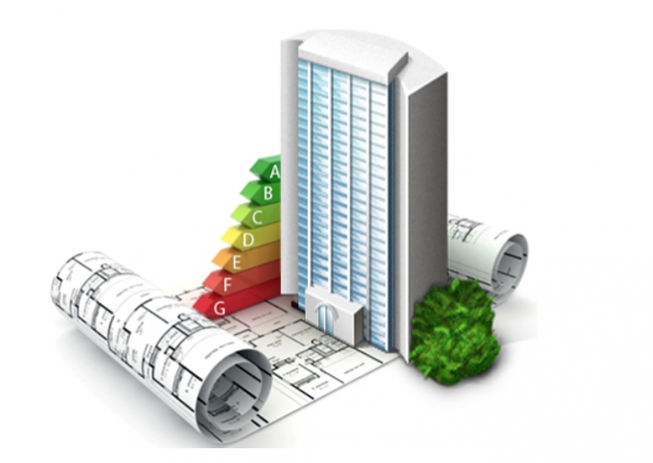 | ||||||||||
| Agricultura y alimentacion sostenible |
Estas son aquellas que generan un impacto ambiental reducido y que contribuye a la seguridad alimentaria y nutricional y que a las generaciones actuales y futuras lleven una vida saludable |
El Green Tech se aplicará cada vez más en la agricultura y la producción de alimentos para reducir el uso de productos químicos, mejorar la eficiencia del agua, reducir las emisiones de gases de efecto invernadero y promover prácticas agrícolas más sostenibles. |
|||||||||||
| Gestion de residuos y reciclaje |
La gestion de residuos trata de toda una serie de actividades que incluyen la recogida, el transporte, el reciclaje, la utilizacion y la reutilizacion de los residuos y el control de todos los prosesos. |
Se esperan avances en tecnologías de gestión de residuos y reciclaje para hacer frente a la creciente cantidad de desechos generados por la sociedad moderna. Esto incluye tecnologías para la conversión de residuos en energía, procesos de reciclaje más eficientes y soluciones innovadoras para reducir la contaminación plástica. |
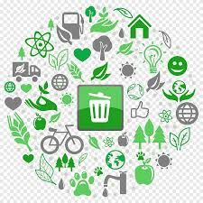 | ||||||||||
| Integracion de la tecnologia y la naturaleza |
La integracion de la tecnologia ocurre cuando la herramientas tecnologicas ayudan a profundizar y mejorar el proceso de aprendizaje en todas las asignaturas en este caso con la naturaleza. |
La biomimética y el diseño inspirado en la naturaleza serán áreas de enfoque para el desarrollo de tecnologías más sostenibles y respetuosas con el medio ambiente. Se espera que la integración de la tecnología y la naturaleza conduzca a soluciones innovadoras en áreas como la arquitectura, la ingeniería y el diseño de productos. |
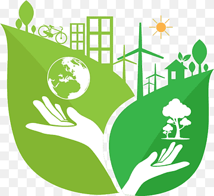 | ||||||||||
La tecnología verde, también conocida como green tech, se refiere a un conjunto de tecnologías y prácticas que se centran en la conservación y el uso sostenible de los recursos naturales, así como en la reducción del impacto ambiental.
El principal objetivo de la tecnología verde es mitigar los impactos ambientales negativos asociados con el desarrollo humano y promover un desarrollo más sostenible y equitativo.
Algunas áreas clave de enfoque incluyen energías renovables, eficiencia energética, gestión de residuos, movilidad sostenible, agricultura y alimentación sostenible, entre otras.
La tecnología verde contribuye al medio ambiente al reducir la huella de carbono, conservar los recursos naturales, reducir la contaminación y promover prácticas sostenibles en diversos sectores.
Puedes encontrar más información en sitios web especializados, organizaciones ambientales, informes de instituciones internacionales como la ONU y la Agencia Internacional de Energía (IEA), entre otros.